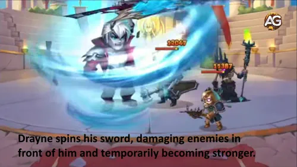
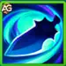
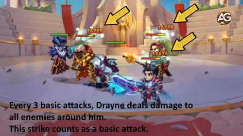
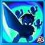
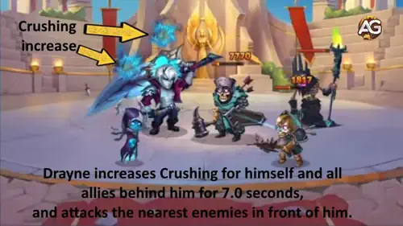
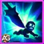
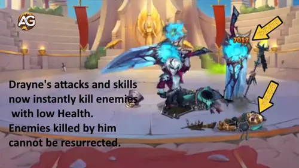
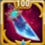

Guide Drayne : le contre ultime aux résurrections dans Hero Wars Alliance
Vous en avez assez de voir Kayla et Aidan ramener leurs alliés à la vie juste au moment où vous alliez gagner ? Découvrez Drayne, le maître épéiste venu d’un autre monde pour changer le champ de bataille. Ce combattant de première ligne ne se contente pas d’infliger des dégâts : il s’assure que les ennemis qu’il tue restent morts. Plus de résurrections frustrantes !
Drayne rejoint la faction Way of Eternity et apporte une mécanique décisive : il augmente le Crushing pour lui-même et pour tous les alliés placés derrière lui. Résultat : votre équipe inflige plus de dégâts aux ennemis sous 50% de PV, transformant les combats serrés en exécutions garanties.

Qui est Drayne dans Hero Wars Alliance ?
- 🗡️ Classe de glyphe : Warrior
- 📍 Position : Front Line
- 💪 Stat principale : Strength
- ⚔️ Rôle principal : Fighter
- 🏛️ Faction : Way of Eternity
- 💎 Comment obtenir les Soul Stones : Événements spéciaux
- 🤝 Meilleures synergies : Corvus, Morrigan, Octavia, Dante, Tempus
- 🐉 Classement Hydra : Pas encore défini
Ce qui rend Drayne unique, c’est son bonus de Crushing : un stat qui augmente tous les dégâts infligés (physiques, magiques et purs) contre des adversaires sous 50% de PV. Il donne ce buff à lui-même et à tous les alliés derrière lui, rendant votre équipe redoutable pour finir les ennemis.
Le plus important : les ennemis tués par Drayne ne peuvent pas être ressuscités. C’est un contre direct à des héros populaires comme Kayla, Aidan, Rufus et Astaroth.
Drayne — Avantages et Inconvénients (Hero Wars Alliance)
✅ Avantages
- Anti-résurrection : Les ennemis tués par Drayne ne peuvent pas être ressuscités, ce qui en fait un counter fort contre les équipes axées sur la résurrection comme Kayla et Aidan.
- Buff de Crushing : Donne une puissante augmentation de Crushing à lui et aux alliés derrière lui, augmentant tous les dégâts contre les ennemis à faible PV.
- Fort dégâts : Rising Tornado inflige un énorme dégât AoE et augmente sa portée et son attaque physique.
- Tank de première ligne : Bonnes stats pour un combattant de première ligne, avec de bonnes synergies avec Corvus, Octavia, Dante et Tempus.
- Spécialiste des exécutions : Excellent pour finir les ennemis blessés avec ses compétences et sa passive.
❌ Inconvénients
- Dépendant du positionnement : Le buff Crushing ne s'applique qu'aux alliés positionnés derrière lui, exigeant un placement soigné.
- Demandant en énergie : Des compétences comme Rising Tornado nécessitent une bonne gestion d'énergie pour un usage optimal.
- Dépendant du meta : L'efficacité peut varier contre des compositions sans résurrection ; pas encore positionné dans la Hydra Tier List.
- Orienté build : Nécessite de prioriser Power Charge et Rising Tornado pour un impact maximal.
Priorité d’amélioration des compétences de Drayne – Hero Wars Alliance
Vous voulez construire Drayne correctement ? Comprendre quelles compétences prioriser peut tout changer pour la capacité d’exécution de votre équipe. Allons-y !
1ère compétence – Rising Tornado (Suprema)
Ne peut pas être copiée ! Drayne fait tournoyer son épée en un tornado dévastateur, frappant tous les ennemis devant lui 3 fois. Quand elle est activée, Drayne grandit et devient une véritable menace sur le champ de bataille.
Pendant 9 secondes, il gagne de l’Attaque physique et la portée de ses compétences augmente. C’est son mode « puissance maximale » : plus grand, plus fort et plus dangereux.
Formule de dégâts : chacun des 3 coups inflige (150% Att. Phys. + 12 000) de dégâts.

Infos / Formules
- Dégâts physiques par coup : (150% Att. Phys. + 12 000)
- Augmentation d’attaque physique : (20% Att. Phys. + 3 000)
- Augmentation taille/portée : 20%
- Durée : 9 secondes
- Coups : 3
- Mots-clés : Dégâts physiques, Buff, Ne peut pas être copiée
Priorité : ÉLEVÉE – C’est la Suprema de Drayne. La monter augmente à la fois les dégâts et le buff d’attaque, ce qui renforce toutes ses autres compétences pendant les 9 secondes.

2ème compétence – Shatter Strike
Toutes les 3 attaques de base, Drayne déclenche une frappe puissante qui endommage tous les ennemis autour de lui. Le meilleur : cette frappe compte aussi comme une attaque de base.
Pourquoi c’est important ? Les attaques de base génèrent de l’énergie. Comme Shatter Strike compte comme une attaque de base, Drayne gagne de l’énergie plus vite et lance plus souvent sa Suprema.
Formule de dégâts : chaque Shatter Strike inflige (200% Att. Phys. + 18 000) de dégâts aux ennemis proches.

Infos / Formules
- Dégâts physiques : (200% Att. Phys. + 18 000)
- Déclenchement : toutes les 3 attaques de base
- Zone : tous les ennemis autour de Drayne
- Mots-clés : Dégâts physiques, AoE, Compte comme attaque de base
Priorité : MOYENNE-ÉLEVÉE – Très bonne montée en dégâts, mais elle se déclenche automatiquement. Priorisez Power Charge et Rising Tornado d’abord, puis investissez ici.

3ème compétence – Power Charge
C’est la compétence qui définit Drayne ! 🔥 Il charge, endommage les ennemis les plus proches, et offre un puissant buff de Crushing à lui-même ET à tous les alliés placés derrière lui.
Qu’est-ce que Crushing ? Un stat redoutable qui augmente TOUS les dégâts infligés (physiques, magiques et purs) contre des ennemis sous 50% de PV. Votre backline termine beaucoup plus vite les cibles affaiblies.
Formule du buff : Drayne augmente le Crushing de (50% Att. Phys. + 6 000) pendant 7 secondes. La charge inflige aussi (15% PV + 24 000) de dégâts basés sur ses PV max.

Infos / Formules
- Dégâts physiques : (15% PV + 24 000)
- Augmentation de Crushing : (50% Att. Phys. + 6 000)
- Durée : 7 secondes
- Type de buff : soi + tous les alliés derrière Drayne
- Mots-clés : Buff, Dégâts physiques, Soutien d’équipe
Priorité : TRÈS ÉLEVÉE – À MAXER EN PREMIER ! C’est la raison principale de jouer Drayne : plus le buff de Crushing est haut, plus toute votre équipe devient létale pour finir les ennemis.

4ème compétence – Final Verdict (Passive)
L’arme anti-résurrection ultime ! ⚔️ Cette passive fait de Drayne un cauchemar pour les équipes à résurrection. Quand un ennemi passe sous un certain seuil de PV, les attaques/compétences de Drayne l’exécutent instantanément.
Et surtout : les ennemis tués par Drayne NE PEUVENT PAS être ressuscités. Adieu la seconde vie d’Astaroth, la protection de Rufus, ou les chaînes de revival de Kayla et Aidan.
Formule du seuil d’exécution : exécute quand les PV tombent sous (10% PV + 24 000). Plus Drayne a de PV max, plus il exécute tôt.

Infos / Formules
- Seuil d’exécution : (10% PV + 24 000)
- Effet spécial : les ennemis tués ne peuvent pas être ressuscités
- Type : Passive
- Mots-clés : Exécution, Anti-résurrection, Passive
Priorité : ÉLEVÉE – Le seuil dépend des PV max de Drayne (qui augmentent déjà). Mais la valeur de base progresse avec l’évolution de compétence, ce qui rend l’exécution plus fréquente. À monter après Power Charge.
📊 Résumé des priorités de compétences
| Compétence | Priorité | Raison |
|---|---|---|
| 3ème – Power Charge | TRÈS ÉLEVÉE | Compétence clé : buff de Crushing pour l’équipe. |
| 1ère – Rising Tornado | ÉLEVÉE | Suprema avec burst + auto-buff. |
| 4ème – Final Verdict | ÉLEVÉE | Exécution + anti-résurrection. |
| 2ème – Shatter Strike | MOYENNE-ÉLEVÉE | Bon AoE, déclenchement automatique. |
Meilleure skin pour Drayne dans Hero Wars Alliance
Les skins de Drayne renforcent des stats clés pour l’exécution. Priorisez la Force pour maximiser les PV et l’Attaque physique, en profitant au mieux de toutes ses compétences.
Default Skin – Force
La Default Skin fournit Force +1 365, ce qui se traduit par un énorme gain de stats pour Drayne. Comme la Force est son stat principal, chaque point donne à la fois des PV et de l’Attaque physique — les deux stats qui alimentent l’ensemble de son kit.
- PV issus de la Force : +54 600
- Attaque physique issue de la Force : +1 365
Cette skin augmente directement le buff de Crushing de Power Charge (qui dépend de l’Attaque physique), augmente le seuil d’exécution de Final Verdict (lié aux PV) et amplifie tous ses dégâts physiques.
Priorité d’évolution : TRÈS ÉLEVÉE – À monter en premier. La Force améliore à la fois la survie et les dégâts, ce qui en fait l’investissement le plus rentable pour Drayne.
Rebirth Skin – Perforation d’armure
La Rebirth Skin apporte Perforation d’armure +10 650. Ce stat permet aux attaques physiques de Drayne de mieux traverser l’armure des tanks de première ligne comme Astaroth, Aurora ou Galahad.
- Perforation d’armure : +10 650
Très utile contre les équipes très blindées, mais elle n’interagit pas directement avec les formules de ses compétences (qui s’appuient surtout sur Force, Attaque physique et PV). C’est un excellent choix secondaire, après la Default Skin.
Priorité d’évolution : ÉLEVÉE – À investir après la Default Skin pour booster le DPS de Drayne contre les tanks.
Priorité d’évolution des artefacts de Drayne dans Hero Wars Alliance
Les artefacts déterminent le plafond de puissance de Drayne. Concentrez-vous sur ceux qui renforcent son Crushing et son potentiel d’exécution.

1er Artefact – Weapon of Valentar (Épée)
L’artefact d’arme fournit Crushing +17 796. Quand Drayne active sa Rising Tornado (compétence Suprema), cet artefact déclenche un effet qui accorde des stats supplémentaires à toute l’équipe pendant 9 secondes.
- Crushing : +17 796
- Activation : se déclenche avec la Suprema
- Durée du buff : 9 secondes
Combiné au buff de Crushing de Power Charge, cet artefact rend votre équipe redoutable contre les ennemis affaiblis. L’activation en zone se marie parfaitement avec les 9 secondes de puissance de Rising Tornado.
Priorité d’évolution : TRÈS ÉLEVÉE – Le Crushing est la stat signature de Drayne. La valeur élevée et l’effet pour l’équipe entière en font un artefact prioritaire.

2ème Artefact – Book of Chronicle of Epicness
Le livre offre deux stats : Perforation d’armure +10 680 et Crushing +2 967. C’est un artefact hybride qui améliore à la fois les dégâts et la capacité d’exécution.
- Perforation d’armure : +10 680
- Crushing : +2 967
La Perforation d’armure rend Drayne plus efficace contre les tanks à haute défense, tandis que le Crushing additionnel augmente un peu plus le potentiel de finition de votre équipe.
Priorité d’évolution : ÉLEVÉE – Excellent investissement secondaire. Le bonus de Crushing est inférieur à celui de l’arme, mais couplé à la Perforation d’armure, il reste très rentable.

3ème Artefact – Ring of Strength
L’anneau apporte Force +3 990. Comme la Force est la stat principale de Drayne, cela se traduit par un énorme gain de PV et d’Attaque physique.
- Force : +3 990
- PV issus de la Force : +159 600
- Attaque physique issue de la Force : +3 990
Cet artefact augmente les PV (ce qui améliore le seuil d’exécution de Final Verdict), le dégâts de Power Charge (qui scale avec les PV max) et l’Attaque physique (qui renforce le buff de Crushing et toutes les compétences de dégâts).
Priorité d’évolution : TRÈS ÉLEVÉE – À monter en parallèle avec l’arme. La Force gagnée impacte directement la survie, le DPS et l’exécution.
Priorité d’évolution des glyphes de Drayne
Les glyphes apportent des bonus de stats significatifs au niveau 80. Priorisez ceux qui se combinent le mieux avec Crushing et le style d’exécution de Drayne.

1er Glyphe – Attaque physique
Ce glyphe augmente directement les dégâts bruts de toutes les compétences physiques de Drayne : Rising Tornado, Shatter Strike et le buff de Crushing de Power Charge.
Stats au niveau 80 : Attaque physique +8 340
Priorité d’évolution : TRÈS ÉLEVÉE – L’Attaque physique scale avec le buff de Crushing (50% Att. Phys. + 6 000) et la plupart de ses dégâts.

2ème Glyphe – PV (Health)
Les PV augmentent la survie de Drayne et améliorent deux compétences clés : les dégâts de Power Charge (15% PV + 24 000) et le seuil d’exécution de Final Verdict (10% PV + 24 000).
Stats au niveau 80 : PV +122 800
Priorité d’évolution : ÉLEVÉE – Plus de PV signifie des exécutions plus précoces et un Power Charge plus puissant, tout en gardant Drayne vivant plus longtemps.

3ème Glyphe – Perforation d’armure
Permet aux attaques physiques de Drayne de mieux traverser l’armure ennemie, ce qui est particulièrement efficace contre les tanks de première ligne.
Stats au niveau 80 : Perforation d’armure +12 850
Priorité d’évolution : MOYENNE-ÉLEVÉE – Utile contre des compositions très défensives, mais sans synergie directe avec les formules de Crushing ou d’exécution.

4ème Glyphe – Crushing
Crushing augmente TOUS les dégâts infligés (physiques, magiques et purs) à des ennemis ayant moins de 50% de PV. C’est le stat qui définit l’identité de Drayne.
Stats au niveau 80 : Crushing +8 340
Priorité d’évolution : TRÈS ÉLEVÉE – C’est le cœur de son kit. Couplé au buff de Power Charge, ce glyphe rend Drayne et son équipe extrêmement dangereux pour achever les cibles.

5ème Glyphe – Force
En tant que stat principale de Drayne, la Force fournit à la fois des PV et de l’Attaque physique, ce qui en fait un excellent investissement polyvalent.
Stats au niveau 80 : Force +2 110
- PV issus de la Force : +84 400
- Attaque physique issue de la Force : +2 110
Priorité d’évolution : ÉLEVÉE – Excellente rentabilité, car elle améliore à la fois la durabilité et les dégâts.
📊 Résumé de priorité des glyphes
| Glyphe | Priorité | Raison |
|---|---|---|
| 4ème – Crushing | TRÈS ÉLEVÉE | Stat centrale de Drayne, se cumule avec Power Charge. |
| 1er – Attaque physique | TRÈS ÉLEVÉE | Scale le buff de Crushing et toutes les compétences de dégâts. |
| 5ème – Force | ÉLEVÉE | Apporte simultanément PV et Attaque physique. |
| 2ème – PV | ÉLEVÉE | Augmente le seuil d’exécution et le Power Charge. |
| 3ème – Perforation d’armure | MOYENNE-ÉLEVÉE | Utile contre les tanks, mais sans impact direct sur les formules clés. |
Synergie de Drayne dans Hero Wars Alliance
Les compétences de Drayne créent des synergies puissantes avec des héros spécifiques. Ci-dessous, nous explorons comment ses compétences interagissent avec d'autres en bataille, en nous concentrant sur la composition d'équipe et les avantages stratégiques.

Corvus réduit toutes les défenses ennemies et augmente l'attaque physique et magique de tous les alliés d'Éternité. La Charge de Puissance de Drayne synergise parfaitement, car le buff d'Écrasement amplifie les attaques augmentées de Corvus, rendant toute la faction Éternité dévastatrice contre les ennemis avec peu de vie.

Dante attaque les alliés de la ligne frontale, réduisant leurs statistiques d'agilité, de force et d'intelligence. Drayne améliore la puissance de Dante avec Charge de Puissance, fournissant un buff d'Écrasement, et attaque également la ligne frontale, créant une combinaison dévastatrice qui affaiblit les ennemis tout en augmentant les dégâts de l'équipe.
La compétence Charge de Puissance de Drayne synergise avec les dégâts purs du Miroir d'Octavia. CHARGE DE PUISSANCE : Drayne augmente l'Écrasement pour lui-même et tous les alliés derrière lui pendant 7 secondes, et attaque les ennemis les plus proches devant lui. Cette configuration maximise la sortie de dégâts purs contre les ennemis affaiblis.
Tempus Chronostasis : Diminution de l'Armure et de la Défense Magique : (13% Attaque Mag. + 1800). Arrête le temps pour tous les ennemis. Pendant 2,5 secondes, ils ne peuvent pas utiliser de compétences, bouger ou esquiver les attaques, et leur Armure et Défense Magique sont réduites. Pendant la durée de cette compétence, le cooldown de toutes les compétences ennemies qui l'ont est gelé. Cette compétence augmente la durée de toutes les malédictions et debuffs lancés sur les ennemis. Pendant que Drayne utilise Tornade Montante : TORNade MONTANTE : Tourne son épée et cause des dégâts aux ennemis devant lui 3 fois. Quand activé, Drayne grandit en taille et pendant 9 sec. augmente son Attaque Physique et la portée de toutes ses compétences. La combinaison gèle les ennemis sur place pour les attaques à portée étendue de Drayne.
(Drayne Best Teams)Meilleures équipes pour Drayne dans Hero Wars Alliance
- Octavia, Iris, Tempus, Dante, Drayne
- Aidan, Somna, Tempus, Yasmine, Drayne
- Folio, Somna, Iris, Byrna, Drayne
- Octavia, Polaris, Dante, Byrna, Drayne
- Octavia, Iris, Dante, Drayne, Corvus
- Octavia, Iris, Morrigan, Dante, Corvus
- Octavia, Heidi, Nébula, Dante, Andvari
- Octavia, Heidi, Nébula, Dante, Drayne
- Aidan, Iris, Tempus, Dante, Kayla
- Aidan, Guus, Dante, Kayla, Julius
Conclusion
Drayne est un exécuteur en première ligne qui excelle à neutraliser les résurrections et à achever les ennemis blessés. Priorisez Power Charge, puis Rising Tornado, et associez-le à Corvus, Octavia, Dante ou Tempus pour un effet maximal.

Laissez votre avis !
Vous avez aimé notre guide de Drayne ? Quelque chose n’était pas clair ou vous souhaitez suggérer des améliorations ? Rejoignez notre section commentaires sur Alexandre Games et partagez vos conseils.
Cliquez sur le bouton ci-dessous pour commencer :